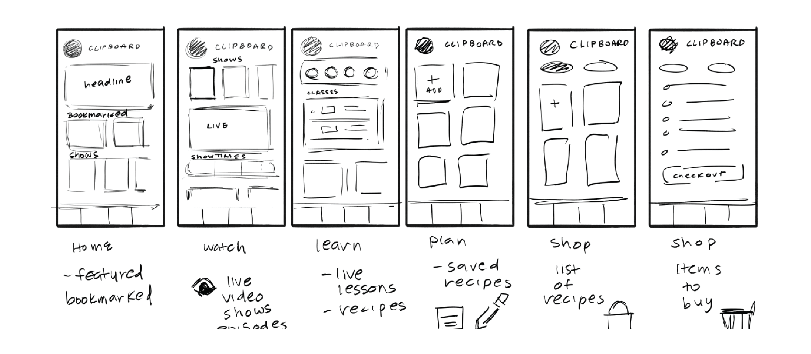
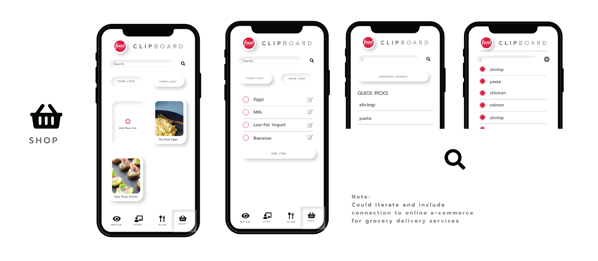
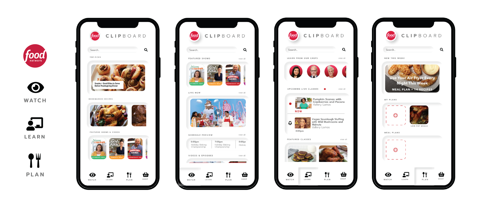
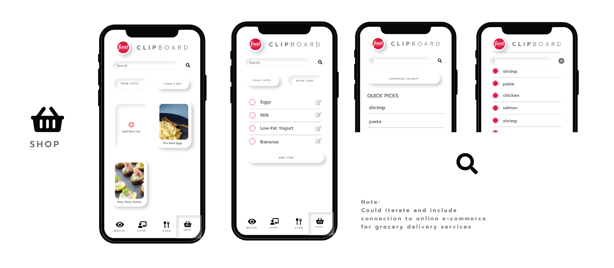
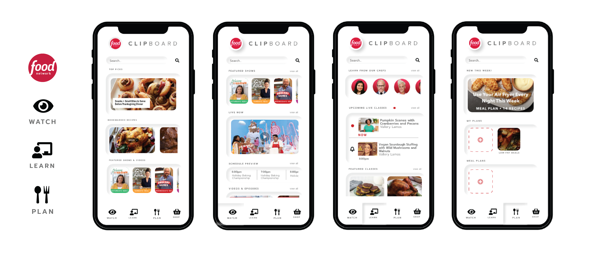

Food Network Clipboard
Overview
A rapid UX redesign challenge for the Food Network Kitchen App with Soft UI design approach. This project was completed in one week, and prototyped in Adobe XD.
User Group
Users who primarily watch Food Network videos and television shows, and request quick access to information.
Goal
My goal was to re-frame the app with a focus on vide-based media. This included restructuring the application elements around videos of recipes, episodes, and classes. This also included emphasizing live viewing of featured shows, and cooking instructors.
Research
I explore the application, and analyzed the key elements of the experience below.
Pros:
- Wide use of images and photography to minimize need to reed unfamiliar titles.
- Tile format
Pain Points:
- Overwhelming amount of content for users to sift through.
- No clear navigable path to desired content.
Findings
As you see above, my analysis focused on the navigability and accessibility to direced information. Notable elements in the app interface and experience include:
- A seperate content navigation bar under the explore tab.
- Emphasis on meals and recipes made by star cooks or presented on feature shows
- Explore, Search, Plan, List, Save imply similar user behaviors/responses (i.e. Explore vs Search or Plan vs List)
- Emphasizes cooking mental models through the use of food photography
- Video content is prevalently avaliable, but not on the main menu
- Lack of content recignition
Approach
- Discoverability os the core theem of the application (new recipes, meals, shows, ingredients, etc.)
- The structure of the application lacks organization of realted content
- Content is framed around the Food Network shows and stars, but not emphasize for user
From my finds, I realized the Food Network Kitchen app was missing a central focus. Serving as an extension of the Food Network television channel, it lacked navigability and accessibility to video content.
Ideation
My goal was to re-frame the app with a focus on video-based media. The included structuring the application elements around videos of recipes, episodes, and classes. This also included emphasizing live viewing of featured shows and cooking instructors.
Design Decisions
I decided to apply Soft UI to the redesign of the app's interface. To maintain the goal of exploration and discoverability, and aimed to emphasis the materiality of Soft UI in efforts to enhance interaction.
Pro: Emphasize materiality of application, which supports mental mode of cooking and food as a tangible activity.
Con: Soft UI could impact accessibility due to subtle contrast of design.
The original interface has repetitive sections, so I minimized the navigation sections.
High Fidelity Prototype
 



Feedback
I was able to get quick user feedback from a few participants. Their feedback included:
- The need for a menu to help find desired contents
- expected a video format similar to YouTube (vertically aligned).